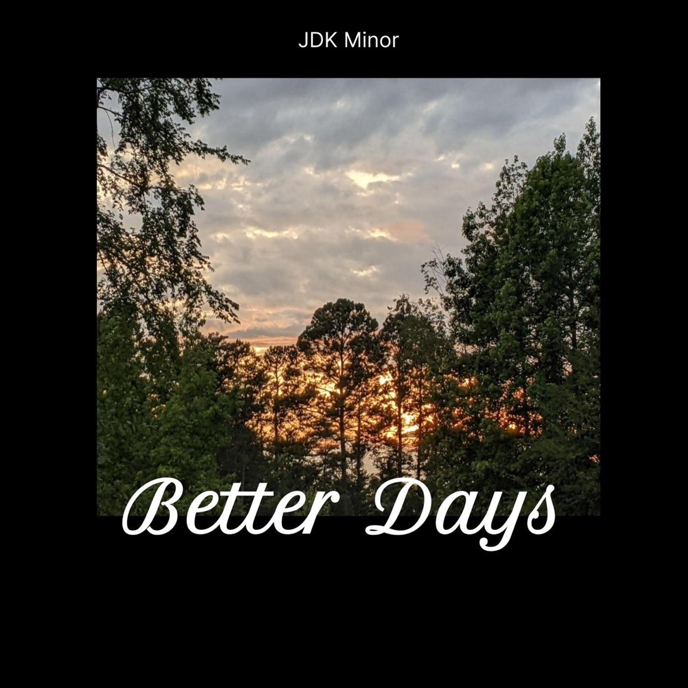

Fantastic Playlists
An unique selection
Playlists
1. FEELIN' GOOD
Songs to make you feel warm and loved
Currently Playing:
Fire On Fire -
Sam Smith
-
Fire On Fire - SAM SMITH - 4:06
-
Space - BIFFY CLYRO - 4:17
-
You Are The Reason - CALUM SCOTT - 3:24
-
Wanted - HUNTER HAYES - 3:48
-
Wish U Were Here - CODY SIMPSON, BECKY G - 3:16
-
Happier - MARSHMELLO, BASTILLE - 3:34
-
What Makes You Beautiful - ONE DIRECTION - 3:19
2. THE ROOMMATES
Produced by F.I.R.S.T. Institute students
Currently Playing:

Better Days -
JDK MINOR
-
Better Days - JDK MINOR - 2:30
-
Passive Aggressive! - CERIUM - 1:36
-
1000 Degrees - PHANTOM - 2:09
-
Phoenix - KAITLIN KING - 4:19
-
Keep Moving - (FEAT. CERIUM, OSE KING, JDK MINOR, PHANTOM) -
4:02
-
Got Me Feelin' - GUUS GARCIA - 3:04
3. HAIKYUU!! (OPENINGS/ENDINGS)
Opening and closing tracks from the 'Haikyuu!!' anime
Currently Playing
イマジネーション -
SPYAIR
-
イマジネーション - SPYAIR - 2:56
-
天地ガエシ - NICO TOUCHES THE WALLS - 4:46
-
Ah Yeah!! - SUKIMA SWITCH - 5:08
-
LEO - TACICA - 4:17
-
アイム・ア・ビリーバー -ハイキュー!!セカンドシ - SPYAIR - 1:30
-
クライマー - GALILEO GALILEI - 3:10
-
FLY HIGH!! - BURNOUT SYNDROMES - 4:04
-
発熱 - TACICA - 3:03
-
ヒカリアレ - BURNOUT SYNDROMES - 4:04
-
マシ・マシ - NICO TOUCHES THE WALLS - 4:07
-
PHOENIX - BURNOUT SYNDROMES - 4:06
-
決戦スピリット - CHICO WITH HONEYWORKS - 4:30
-
突破口 - SUPER BEAVER - 4:13
-
One Day - SPYAIR - 3:26
Back To The Top